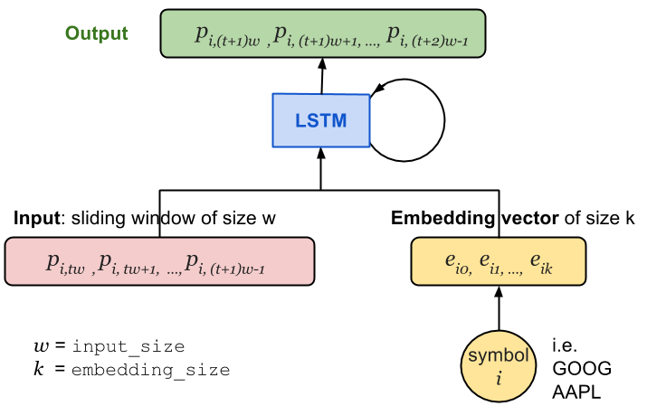
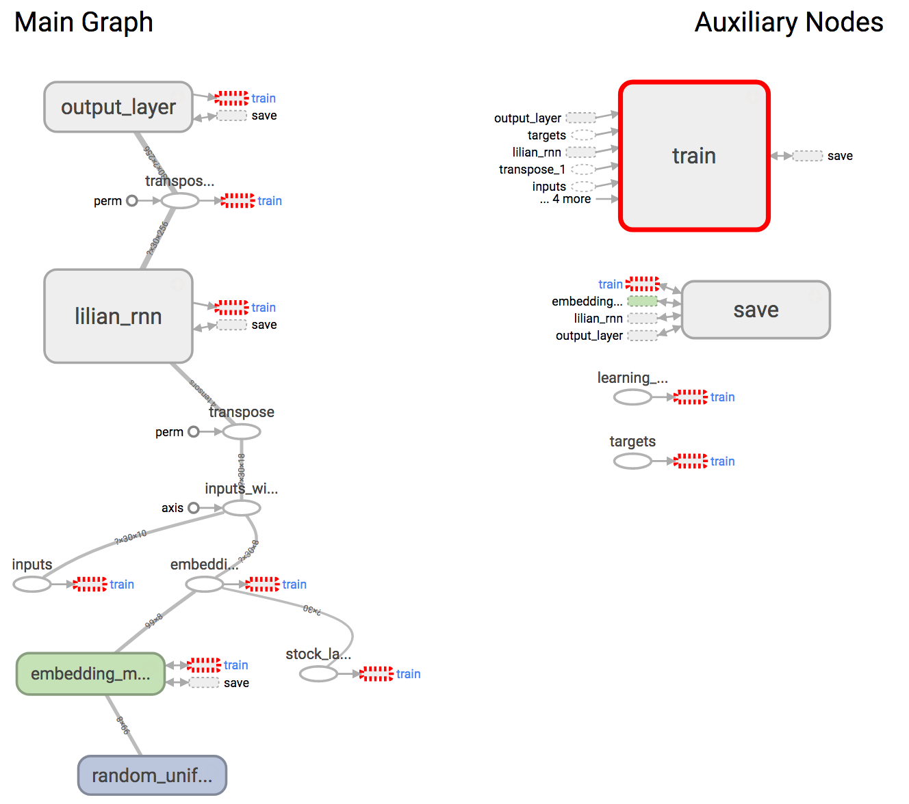
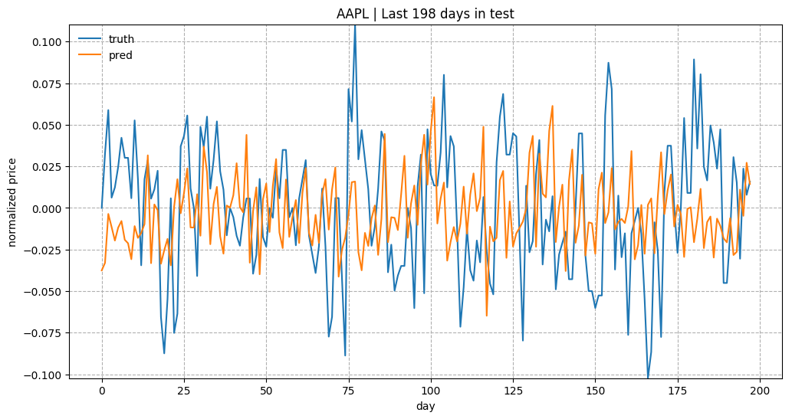

目录
- Dataset
- Model Construction Define the Graph Training Session Visualize the Graph
- Results Price Prediction Embedding Visualization Known Problems
在第 2 部分的教程中，我将继续围绕股票价格预测展开讨论，并希望为我在 使用 RNN 预测股价：第一部分 中构建的循环神经网络赋予处理多只股票的能力。为了区分不同价格序列所关联的模式，我将股票代码的嵌入向量作为输入的一部分。
数据集
在查找过程中，我发现了一个 用于查询 Yahoo! Finance API 的库。如果 Yahoo 没有关闭历史数据获取 API，它会非常有用。不过你仍然可以用它来查询其他信息。在这里，我从 几个免费数据源 中选择了 Google Finance 的链接来下载历史股票价格。
获取数据的代码可以写得非常简洁：
import urllib2
from datetime import datetime
BASE_URL = "https://www.google.com/finance/historical?"
"output=csv&q={0}&startdate=Jan+1%2C+1980&enddate={1}"
symbol_url = BASE_URL.format(
urllib2.quote('GOOG'), # Replace with any stock you are interested.
urllib2.quote(datetime.now().strftime("%b+%d,+%Y"), '+')
)
获取内容时，记得加上 try-catch 封装，以防链接失效或提供的股票代码无效。
try:
f = urllib2.urlopen(symbol_url)
with open("GOOG.csv", 'w') as fin:
print >> fin, f.read()
except urllib2.HTTPError:
print "Fetching Failed: {}".format(symbol_url)
完整可用的数据获取代码可以在 这里 找到。
模型构建
该模型需要学习不同股票随时间变化的价格序列。由于不同股票具有不同的内在模式，我希望明确告诉模型当前处理的是哪只股票。相比 one-hot 编码，Embedding（嵌入） 更为合适，原因如下：
- 假设训练集中包含 N 只股票，one-hot 编码将会引入 N（或 N-1）个额外的稀疏特征维度。而如果将每个股票代码映射到一个长度仅为 k 的嵌入向量 k \ll N，我们就能得到一个更加紧凑的表示，进而减少需要处理的数据规模。
- 此外，嵌入向量是需要学习的变量。相似的股票可能会拥有相近的嵌入向量，从而帮助彼此的预测，例如你后续会看到的“GOOG”和“GOOGL”。
在循环神经网络中，某个时间步 t 的输入向量包含第 i 只股票 (p_{i, tw}, p_{i, tw+1}, \dots, p_{i, (t+1)w-1}) 的 input_size（记为 w）个日价格数值。该股票代码会被唯一映射为一个长度为 embedding_size（记为 k）的向量 (e_{i,0}, e_{i,1}, \dots, e_{i,k})。如图 1 所示，价格向量与嵌入向量拼接后，一起输入到 LSTM 单元中。
另一种方案是将嵌入向量与 LSTM 单元的最后一个状态拼接，在输出层学习新的权重 W 和偏置 b。但这种方式下，LSTM 单元无法区分不同股票的价格，其能力会受到很大限制。因此我最终选择了前一种方法。

在 RNNConfig 中新增了两项配置：
- embedding_size 控制每个嵌入向量的维度；
- stock_count 表示数据集中独特股票的数量。
这两者共同决定了嵌入矩阵的大小，与 使用 RNN 预测股价：第一部分 中的模型相比，本模型需要额外学习 embedding_size × stock_count 个变量。\times
class RNNConfig():
# ... old ones
embedding_size = 3
stock_count = 50
定义计算图
—— 让我们开始阅读一些代码 ——
(1) 如教程 使用 RNN 预测股价：第一部分 所示，我们首先定义一个名为 lstm_graph 的 tf.Graph()，并以相同方式定义一组张量用于存放输入数据、inputs、targets 和 learning_rate。此外还需要定义一个占位符来存放与输入价格对应的股票代码列表。股票代码已事先通过 label encoding 映射为唯一的整数。
# Mapped to an integer. one label refers to one stock symbol.
stock_labels = tf.placeholder(tf.int32, [None, 1])
(2) 接下来我们要建立一个嵌入矩阵作为查找表，其中包含所有股票的嵌入向量。该矩阵使用区间 [-1, 1] 内的随机数初始化，并在训练过程中不断更新。
# NOTE: config = RNNConfig() and it defines hyperparameters.
# Convert the integer labels to numeric embedding vectors.
embedding_matrix = tf.Variable(
tf.random_uniform([config.stock_count, config.embedding_size], -1.0, 1.0)
)
(3) 将股票标签重复 num_steps 次，以匹配 RNN 展开后的形式以及训练时 inputs 张量的形状。 变换操作 tf.tile 接收一个基础张量，通过将特定维度复制若干次来生成新的张量；具体来说，输入张量的第 i 维会乘以 multiples[i] 倍。例如，若 stock_labels 为 [[0], [0], [2], [1]]，使用 [1, 5] 进行 tiling 将得到 [[0 0 0 0 0], [0 0 0 0 0], [2 2 2 2 2], [1 1 1 1 1]]。
stacked_stock_labels = tf.tile(stock_labels, multiples=[1, config.num_steps])
(4) 然后根据查找表 embedding_matrix 将股票代码映射为对应的嵌入向量。
# stock_label_embeds.get_shape() = (?, num_steps, embedding_size).
stock_label_embeds = tf.nn.embedding_lookup(embedding_matrix, stacked_stock_labels)
(5) 最后，将价格数值与嵌入向量合并。操作 tf.concat 沿着指定维度拼接张量列表。在我们的例子中，我们希望保持 batch size 和步数不变，仅将长度为 input_size 的输入向量扩展以包含嵌入特征。
# inputs.get_shape() = (?, num_steps, input_size)
# stock_label_embeds.get_shape() = (?, num_steps, embedding_size)
# inputs_with_embeds.get_shape() = (?, num_steps, input_size + embedding_size)
inputs_with_embeds = tf.concat([inputs, stock_label_embeds], axis=2)
剩下的代码负责运行动态 RNN、提取 LSTM 单元的最后状态，并处理输出层的权重和偏置。详情请参考 使用 RNN 预测股价：第一部分。
训练过程
如果你还不了解如何在 Tensorflow 中启动训练会话，请先阅读 使用 RNN 预测股价：第一部分。
在将数据送入计算图之前，需要先通过 label encoding 将股票代码转换为唯一的整数。
from sklearn.preprocessing import LabelEncoder
label_encoder = LabelEncoder()
label_encoder.fit(list_of_symbols)
每只股票的训练/测试集划分比例保持不变，即 90% 用于训练，10% 用于测试。
可视化计算图

在代码中定义好计算图后，我们可以在 Tensorboard 中查看其可视化效果，以确认各个组件是否正确构建。它在整体结构上与我们之前绘制的架构图非常相似。 Tensorboard 中上述计算图的可视化效果。其中“train”和“save”两个模块已从主图中移除。
除了展示图结构或跟踪变量随时间的变化外，Tensorboard 还支持 嵌入可视化。为了将嵌入值传递给 Tensorboard，我们需要在训练日志中添加相应的记录操作。
(0) 在我的嵌入可视化中，我希望按照所属行业为每只股票着色。这些元数据应保存在一个 csv 文件中。该文件包含两列：股票代码和所属行业。csv 文件是否包含表头并不重要，但列出的股票顺序必须与 label_encoder.classes_ 保持一致。
import csv
embedding_metadata_path = os.path.join(your_log_file_folder, 'metadata.csv')
with open(embedding_metadata_path, 'w') as fout:
csv_writer = csv.writer(fout)
# write the content into the csv file.
# for example, csv_writer.writerows(["GOOG", "information_technology"])
(1) 首先在训练用的 tf.Session 中设置 summary writer。
from tensorflow.contrib.tensorboard.plugins import projector
with tf.Session(graph=lstm_graph) as sess:
summary_writer = tf.summary.FileWriter(your_log_file_folder)
summary_writer.add_graph(sess.graph)
(2) 将我们在 lstm_graph 中定义的张量 embedding_matrix 添加到 projector 配置变量中，并关联元数据 csv 文件。
projector_config = projector.ProjectorConfig()
# You can add multiple embeddings. Here we add only one.
added_embedding = projector_config.embeddings.add()
added_embedding.tensor_name = embedding_matrix.name
# Link this tensor to its metadata file.
added_embedding.metadata_path = embedding_metadata_path
(3) 这行代码会在 your_log_file_folder 文件夹下创建一个 projector_config.pbtxt 文件。TensorBoard 启动时会读取该文件。
projector.visualize_embeddings(summary_writer, projector_config)
实验结果
模型使用标普 500 指数中市值最大的前 50 只股票进行训练。
（在 github.com/lilianweng/stock-rnn 仓库内运行以下命令）
python main.py --stock_count=50 --embed_size=3 --input_size=3 --max_epoch=50 --train
采用的配置如下：
stock_count = 100
input_size = 3
embed_size = 3
num_steps = 30
lstm_size = 256
num_layers = 1
max_epoch = 50
keep_prob = 0.8
batch_size = 64
init_learning_rate = 0.05
learning_rate_decay = 0.99
init_epoch = 5
价格预测
作为对预测质量的简要概述，图 3 展示了“KO”、“AAPL”、“GOOG”和“NFLX”测试数据的预测结果。真实值与预测值的整体趋势基本吻合。考虑到本预测任务的设计方式，模型需要依赖所有历史数据点来预测接下来仅 5 个（input_size）交易日的情况。由于 input_size 较小，模型无需担心长期增长曲线。如果增大 input_size，预测难度将会显著增加。
